| [ Team LiB ] |
|
8.3 Generalization of the Open-Loop Control Design ProcedureSo far we have used two example processes: (i) first-order and (ii) second-order with a RHP zero. Now is the time to generalize our results to any process system. First of all, we have been using the inverse of the process transfer function, gp(s), in our control law. We must realize that the actual process transfer function is never known exactly. We now use two transfer function representations of the process. One is considered the process (sometimes we use the term plant), which is never known exactly. The other is considered the process model, which we do know exactly. 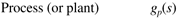 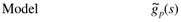 Recall that when the process had a RHP zero, we performed a factorization, so that the RHP zero did not form a RHP pole in the controller. In general, we factor the process model in the following fashion, 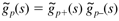 where 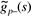 contains the invertible elements and 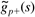 contains the noninvertible elements. One easy way to remember this is to recall that if RHP zeros are "inverted" (the RHP is the positive side of the complex plane), they become RHP poles, which are unstable. Question 8.3.1: Is dead time invertible? Answer 8.3.1: The reader should verify that dead time is not invertible. If there is dead time in the process, it cannot be removed by any physically realizable controller. Our controller design will consist of inverting the invertible part of the process model and cascading this with a filter that is of high enough order to make the controller proper. 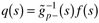 In the next section, we see that there are a number of ways to factor the same transfer function into invertible and noninvertible parts. Controller FactorizationThere are a number of ways to factor the same transfer function, 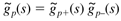 The most common method, known as an all-pass factorization, is shown as method 2 in the example below. The reason for the term all-pass was illustrated in Chapter 7, frequency-response techniques. Example 8.3: Factorization TechniquesConsider a process model with inverse response characteristics (a RHP zero) 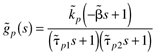 where 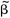 is positive. Method 1: Simple factorization The simple factorization approach is to simply place the RHP zeros in the noninvertible part of the process model 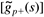. 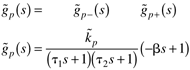 Method 2: All-pass factorization The all-pass factorization places the RHP zero in the noninvertible part of the process model, but it also places a pole at the reflection of the RHP zero: 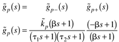 Generally, Method 2 (all-pass) is used because the resulting controlled system minimizes the integral squared error (ISE). Comparison of Output Responses for Different Controller FactorizationsHere we compare the different controlled variable responses for methods 1 and 2. Method 1 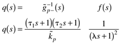 where we have used a second-order filter to make q(s) realizable. Now, since y(s) = q(s) gp(s) r(s), 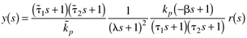 Assuming a perfect model 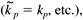 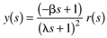 which is the same as the result obtained in Equation (8.19). Method 2 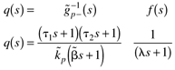 Again, since y(s) = q(s) gp(s) r(s), 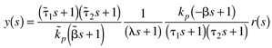 and assuming a perfect model 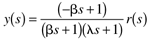 which is slightly different from the response shown in Equation (8.32). The responses will be equivalent only if we set l = b (and there is generally no reason to do that). Summary of Controller Design ProcedureThe controller design procedure has been generalized to the following steps.
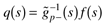 The factorization is used only for control-system design. The actual model still contains the RHP zeros and time delays. Remember that the factorization was performed so that the controller would be stable. For linear systems, if the controller is stable and the process is stable, then the overall controlled system is stable. This is true simply because if two transfer functions are stable, then the transfer functions cascaded together (multiplied) are stable. This is a nice result because in a standard feedback control formulation, the controller and the process can each be stable, yet the feedback system may be unstable. |
| [ Team LiB ] |
|